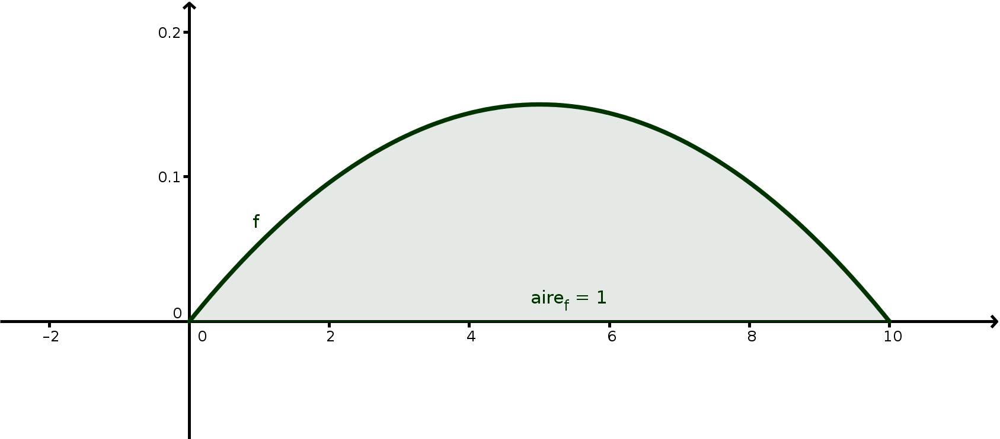

BTS - Probabilités 2 - Cours
Généralités
On sait qu'un phénomène doit se produire à un instant donné, entre \(0\)h et \(10\)h. Quelle est la probabilité qu'il ait lieu entre \(7\)h et \(8\)h ?
Ce type de problème est modélisé en utilisant des lois de probabilité continues.
Notion de densité
Soit \(I\) un intervalle et \(f\) une fonction définie sur \(I\).
\(f\) est appelée
densité sur \(I\) lorsque :
- \(f\geq0\) ;
- \(\displaystyle\int_I\,f(t)\,\textrm{d}t=1\).
\(f(t)=\dfrac{3}{500}x(10-x)\) est une densité sur \([0;10]\) :

Déterminer la constante \(A\) pour que \(g(x)=Ax\) soit une densité sur \([0;10]\).
Fonction de répartition
Soit \(I\) un intervalle et \(f\) une densité sur \(I\).
On pose \(a=\inf(I)\) et \(b=\sup(I)\) (on peut avoir \(a=-\infty\) et \(b=+\infty\)) et
\(F(t)=\displaystyle\int_a^t\,f(u)\,\textrm{d}u\)
(\(F\) est ainsi la primitive de \(f\) qui s'annule en \(t=a\))
Cette primitive \(F\) est appelée fonction de répartition associée à la densité \(f\).
- \(F\) est croissante ;
- \(F(a^+)=0\) et \(F(b^-)=1\).
Loi de probabilité admettant une densité
Soit \(c<d\) deux nombres de l'intervalle \(I\).
Si \(X\) est une variable aléatoire qui suit une loi de densité \(f\), alors on a :
\[P(c\leqslant X\leqslant d)=\int_c^d\,f(t)\,\textrm{d}t=F(d)-F(c)\]
\(c=4\) et \(d=6{,}5\)
Dans le cas d'une variable aléatoire \(X\) suivant une loi provenant d'une densité,
- pour n'importe quelle valeur de \(c\) dans \(I\), \(P(X=c)=0\) ;
- \(P(X<d)\,=\,P(X\leqslant d)\) ;
- \(P(c<X)\,=\,P(c\leqslant X)\) ;
- de même,
\(P(c<X<d)=P(c\leqslant X <d)=P(c<X\leqslant d)=P(c\leqslant X\leqslant d)\).
Espérance et variance
Soit \(X\) une variable aléatoire provenant d'une densité \(f\) définie sur un intervalle \(I\).
Espérance : \(E(X)=\displaystyle\int_I\,xf(x)\,\textrm{d}x\)
\(X\) et \(Y\) sont deux variables aléatoires, \(a\) et \(b\) deux constantes.
- \(E(aX+b)=aE(X)+b\)
- \(E(aX+bY)=aE(X)+bE(Y)\) (linéarité)
- Si \(X\) et \(Y\) sont indépendantes :
\(E(XY)=E(X)E(Y)\)
Calculer les espérances des deux variables aléatoires \(X\) et \(Y\) associées aux deux premiers exemples du cours, et en déduire l'espérance de leur produit (en admettant qu'elles sont indépendantes).
- Variance :
\(V(X)=\int_I\,\left[x-E(X)\right]^2f(x)\,\textrm{d}x\)
- Écart-type :
\(\sigma(X)=\sqrt{V(X)}\)
\(X\) et \(Y\) sont deux variables aléatoires, \(a\) et \(b\) deux constantes.
- \(V(aX+b)=a^2V(X)\) et \(\sigma(aX+b)=|a|\sigma(X)\) ;
- Si \(X\) et \(Y\) sont indépendantes :
\(V(aX+bY)=a^2V(X)+b^2V(Y)\) et \(\sigma(aX+bY)=\sqrt{[a\sigma(X)]^2+[b\sigma(Y)]^2}\)
Calculer les variances et écarts-type des deux variables aléatoires \(X\) et \(Y\) associées aux deux premiers exemples du cours, et en déduire l'écart-type de leur de leur moyenne (en admettant qu'elles sont indépendantes).
Exemples de lois continues
Loi uniforme
Cette loi existe sur tout intervalle \(I\) borné (c'est à dire qu'aucune des bornes de \(I\) ne doit être infinie). On sait qu'un événement va se produire à un instant dans l'intervalle de temps \(I=[a;b]\), mais on ne sait pas quand et il n'y a aucune raison de privilégier telle ou telle date.
Loi uniforme sur \(I=[a;b]\) :
Cette loi a pour densité la fonction constante sur \(I\) :
\(f(x)=\dfrac{1}{b-a}\)
Densité uniforme sur \([2;5,5]\) :
Calcul effectif :
Pour \(c<d\) deux constantes dans \([a;b]\) :
\(P(c<X<d)=\dfrac{d-c}{b-a}\)
Le démontrer.
Espérance, variance, écart-type :
Si \(X\) suit une loi uniforme sur \([a;b]\) :
- \(E(X)=\dfrac{a+b}{2}\) (milieu de \([a;b]\)) ;
- \(V(X)=\dfrac{(b-a)^2}{12}\) et \(\sigma(X)=\dfrac{b-a}{2\sqrt{3}}\).
Mike peut peut débarquer n'importe quand entre 12h et 14h.
- Quelle est la probabilité qu'il débarque entre 13h et 13h30 ?
- À quelle heure, en moyenne, débarque-t-il ?
- Il est 13h et Mike se fait toujours attendre. Sachant qu'il n'est toujours pas là à 13h, quelle est la probabilité qu'il arrive avant 13h30 ?
* Démontrer les formules générales d'espérance et variance de la loi uniforme données.
Loi exponentielle
Cette loi existe sur \(I=\left[0;+\infty\right[\) ; elle modélise la durée de vie d'un phénomène sans mémoire, comme la durée de vie d'un composant électrique.
Loi exponentielle de paramètre \(\lambda\) :
Cette loi a pour densité la fonction : \(f(x)=\lambda\textrm{e}^{-\lambda x}\)
Densité exponentielle de paramètre 1/4 :

Calcul effectif :
Pour \(c\) constante positive :
\(P(X<c)=\displaystyle\int_0^c \lambda\textrm{e}^{-\lambda x}\,\textrm{d}x\)
Le composant A a une durée de vie qui suit une loi exponentielle de paramètre 0,0004.
Calculer la probabilité, arrondie au centième, que le composant A ait une durée de vie strictement inférieure à 1000 heures.
Espérance, variance, écart-type :
Si \(X\) suit une loi exponentielle de paramètre \(\lambda\) :
- Espérance : \(E(X)=\dfrac{1}{\lambda}\)
- Variance : \(V(X)=\dfrac{1}{\lambda^2}\)
- Écart-type : \(\sigma(X)=\dfrac{1}{\lambda}\)
* Démontrer que \(F(x)=-\left(x+\frac{1}{\lambda}\right)\rm{e}^{-\lambda x}\) est une primitive de \(\lambda x\rm{e}^{-\lambda x}\) ; démontrer alors la formule donnant l'espérance d'une loi exponentielle.
Loi sans mémoire :
La loi exponentielle est dite «sans mémoire», dans le sens où si \(c>a>0\) sont donnés, alors : \(P_{X>a}(X<c)=P(x<c-a)\)
Le composant A a une durée de vie qui suit une loi exponentielle de paramètre 0,0004.
Sachant que le composant A a tenu déjà 1000 heures, calculer la probabilité, arrondie au centième, que le composant A ait une durée de vie strictement inférieure à 2000 heures.
Loi normale
Premières propriétés
Cette loi est définie sur \(\left]-\infty;+\infty\right[\) ; elle est très fréquemment observée dans l'étude de phénomènes physiques ou biologiques.
Loi normale d'espérance \(\mu\) et d'écart-type \(\sigma\) :
Cette loi a pour densité la fonction :
\(f(x)=\dfrac{1}{\sigma\sqrt{2\pi}}\textrm{e}^{-\frac{1}{2}\left(\frac{x-\mu}{\sigma}\right)^2}\)
Densité normale avec \(\mu=2\) et \(\sigma=\dfrac{1}{2}\) :
La courbe de \(f\) est symétrique par rapport à la droite verticale d'équation \(x=\mu\) ; plus \(\sigma\) est grand, plus la bosse autour de \(\mu\) est applatie ; l'aire sous cette courbe sur reste toujours de 1=100%.
- Si \(\mu=0\), on dit que la loi normale est centrée.
- Si \(\sigma=1\), on dit que la loi normale est réduite.
- Si \(\mu=0\) et \(\sigma=1\), on dit que la loi normale est centrée-réduite.
Si \(X\sim\mathcal{N}(\mu;\sigma^2)\), alors \(Z=\dfrac{X-\mu}{\sigma}\) suit une loi normale centrée réduite.
Il est important de mémoriser les 3 intervalles suivants :
Si \(X\sim\mathcal{N}(\mu;\sigma^2)\), alors :
- \(P(\mu-\sigma\leqslant X\leqslant \mu+\sigma)\approx68\%\) (à \(10^{-2}\)) ;
- \(P(\mu-2\sigma\leqslant X\leqslant \mu+2\sigma)\approx95\%\) (à \(10^{-2}\)) ;
- \(P(\mu-3\sigma\leqslant X\leqslant \mu+3\sigma)\approx99,7\%\) (à \(10^{-3}\)).
On appelle l'intervalle \(\left[\mu-2\sigma;\mu+2\sigma\right]\) : plage de normalité.
Déterminer \(P(\mu\leqslant X\leqslant \mu+3\sigma)\).
La densité d'une loi normale n'admettant pas de primitive «commune», on utilise la calculatrice ou des tables pour calculer les probabilités d'une variable aléatoire qui suit une loi normale.
Calculatrice :
Si \(X\sim\mathcal{N}(\mu,\sigma)\) :
- TI : dans Distrib(2nde-Var) :
\(P(a\leqslant X\leqslant b)=\,\)normalFrep(\(a,b,\mu,\sigma\))
- Casio : OPTN / STATS / DIST / Norm :
\(P(a\leqslant X\leqslant b)=\,\)Ncd(\(a,b,\sigma,\mu\))
penser à mettre en mode «variable» (\(\neq\) liste).
Pour \(a=-\infty\), prendre \(a=-10^{99}\) ou pour \(b=+\infty\), prendre \(b=10^{99}\).
Coefficients \(u_\alpha\) ; inversion de la loi normale
Si \(X\) suit une loi normale de moyenne \(\mu\) et d'écart-type \(\sigma\), alors pour tout \(0<\alpha\leq1\), il existe un unique \(u_\alpha\geqslant0\) tel que :
\(P(\mu-u_\alpha \sigma \leqslant X \leqslant \mu+u_\alpha \sigma)=1-\alpha\)
*On pose pour \(t\geq0\) : \(\phi(t)=P(\mu-t \sigma \leqslant X \leqslant \mu+t \sigma)\)
- Calculer \(\phi(0)\) et \(\displaystyle\lim_{+\infty}\phi\).
- Justifier que \(\phi\) est continue et strictement croissante.
- Conclure.
Démontrer que :
\(P(\mu-u_\alpha \sigma \leqslant X \leqslant \mu+u_\alpha \sigma)=1-\alpha
\Leftrightarrow P( X \leqslant \mu+u_\alpha \sigma)=1-\dfrac{\alpha}{2}
\)
Calculatrice : Calcul de \(a\) tel que \(P(X\leqslant a)=p\) (avec \(0<p<1\) donné) :
- TI : dans Distrib(2nde-Var) :
\(\textrm{invNorm}(p,\mu,\sigma)\) ou \(\textrm{FracNormale}(p,\mu,\sigma)\)
- Casio : OPTN / STATS / DIST / Norm
\(\textrm{invN}(p,\sigma,\mu\))
Exercices
On admet que le temps passé en heures chaque jour devant la TV peut être modélisé par une variable aléatoire \(X\) suivant une loi normale de moyenne 4h et d'écart-type 45min.
On donnera les résultats au millième près.
- Déterminer le pourcentage de personnes regardant la télévision entre 3 et 5 heures par jour.
- Déterminer le pourcentage de personnes regardant la télévision moins de 2 heures par jour.
- Déterminer les trois nombres \(Q_1\), \(Med\) et \(Q_3\) tels que :
\(P(x<Q_1)=\dfrac{1}{4}~;~P(x<Med)=\dfrac{1}{2}~;~P(X<Q_3)=\dfrac{3}{4}\)
Dans une population, le résultat \(X\) au test du QI d'une personne prise au hasard suit une loi normale de moyenne 100 et d'écart-type 15.
- Déterminer le pourcentage de personnes ayant un QI supérieur à 90 ; inférieur à 85 ; entre 70 et 90.
- Déterminer le réel \(k\) tel que \(P(X<k)=0{,}9\) ; interpréter.
- Déterminer la valeur du réel \(l\) tel que 60% des personnes ont un QI supérieur à \(l\).
Approximation d'une loi binomiale par une loi normale
Si \(X\sim\mathcal{B}(n,p)\), avec \(n\) assez grand (en pratique on prend \(np(1-p)>9\)), alors la loi de \(X\) est proche de celle de la loi normale \(\mathcal{N}(\mu,\sigma)\) de même espérance (prendre \(\mu=np\)) et de même écart type ( prendre \(\sigma=\sqrt{np(1-p)}\)).
Problème : Pour une loi normale, la probabilité d’une valeur isolée est nulle. Il semble donc impossible de calculer \(P(X = k)\) avec cette approximation.
Approcher la loi binomiale par la loi normale c’est remplacer une loi discrète (celle de \(X\sim\mathcal{B}(n,p)\)) par une loi continue (celle de \(X_c\sim\mathcal{N}(\mu=np,\sigma=\sqrt{np(1-p)})\)).
Solution : On remplace donc la probabilité de la valeur isolée \(x\) de la
variable \(X\) par celle d’un intervalle de longueur \(1\) centré en \(x\)
pour la variable \(X_c\) : \(P(X = x) \approx P(x -0,5 < X_c < x + 0,5)\)
Cette opération s’appelle la correction de continuité.
La variable discrète \(X\) étant approchée par la variable continue \(X_c\) , on utilise les règles suivantes d’approximation :
- \(P(X < n)\) s’obtient avec \(P(X_c < n – 0{,}5)\) ;
- \(P(X \leqslant n)\) s’obtient avec \(P(X_c < n + 0{,}5)\) ;
- \(P(X > n)\) s’obtient avec \(P(X_c > n + 0{,}5)\) ;
- \(P(X \geqslant n)\) s’obtient avec \(P(X_c > n – 0{,}5)\).
On calcule par exemple \(P(a < X \leqslant b)\) avec \(P(a + 0{,}5 < X_c < b + 0{,}5)\).
Soit \(X\sim\mathcal{B}\left(50, \frac{1}{2}\right)\).
Les conditions d'approximations de la loi de \(X\)
par une loi normale sont remplies, et l'on peut considérer que \(X\) suit à peu près la loi \(\mathcal{N}\left(25, \frac{25}{2}\right)\).
Évaluons alors de deux façons \(P(24 \leqslant X \leqslant 26)\) :
- En valeur exacte avec la loi binomiale :
\(P(X = 24) + P(X = 25) + P(X = 26) \approx 0{,}3282\)
- En valeur approchée avec la loi normale :
\(P(24 \leqslant X \leqslant 26) \approx 0{,}2222\)
- En valeur approchée avec la loi normale corrigée par continuité :
\(P(23{,}5 \leqslant X \leqslant 26{,}5) \approx 0{,}3286\)
Le résultat est bien meilleur en tenant compte de la correction par continuité.
Théorème central-limite
Plus généralement que dans le paragraphe précédent, si \(X_1,X_2,\ldots\) est une suite de variable aléatoires suivant la même loi (mêmes espérances \(\mu\) et mêmes écarts-type \(s\)), alors leur moyenne \(M_n=\dfrac{X_1+\cdots+X_n}{n}\), pour \(n\) assez grand, suit approximativment une loi normale :\(\mathcal{N}\left(\mu,\frac{s}{\sqrt{n}}\right)\)
de petits phénomènes hasardeux de même type, dans la nature, s'«ajoutent», et la contribution de chacun permet d'obtenir à grande échelle des distributions ressemblant à la courbe de la loi normale (appelée aussi courbe de Gauss).